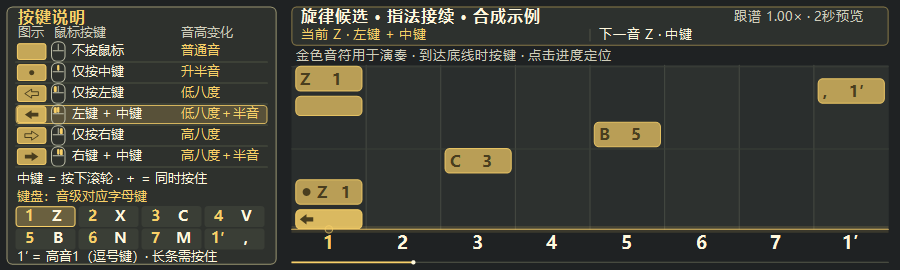

RHYTHM HARMONICA
节奏口琴
先选主旋律谱并试听，再点击标题栏“参考谱面”：左侧常驻六种鼠标指法与八键说明，右侧金色旋律向判定线流动。在线搜歌同页优先提供主旋律 MIDI，录音转录另行选择；已有曲目可右键查找主旋律谱并保留原谱。查看选谱步骤 · 查看图例与具体指法。
版本 1.8.4：统一口琴编配，流畅优先
普通歌曲先选主旋律，再按口琴音域和换指要求编配。默认“流畅优先”，仅在有必要时简化细微邻音装饰；其他旋律保留，过密时整曲降速。用户设置的速度继续保留，实际倍率在完整与迷你谱面右上角显示。
瀑布、试听、导出和自动吹奏共用同一份编配。导出写入 GM 口琴音色，量化后的音长与间隔也经过检查；原始曲谱仍保留。查看三份真实歌曲的对比、具体编配规则与验证结果。
最终验证：28 组、11976 项非前台整合断言通过，八个实际 MIDI 导出场景全部合格。完整与迷你界面已离屏渲染并目测；下方 1.8.3 及更早结果保留为历史记录。
版本 1.8.3：节奏一致，指法更清楚
试听与导出使用当前口琴可奏音符，超音域音保留为休止，不把后续音符提前。自动吹奏在音长允许时预留同键重触与鼠标修饰切换的间隔，减少连续音逐次拖后的问题；极短音仍遵守最短按键时间。
谱面顶部显示当前与下一音指法，左侧鼠标图例同步高亮。休止、等待首音与旋律结束分别提示；旋律候选和估计标记继续显示。查看本轮实现与验证记录。
GitHub 仓库：Rhythm-harmonica · 下载项目后可在根目录 README 中查看快速开始、用途和构建命令。
版本 1.8.2：审查后的可靠性维护
历史交付记录（2026 年 10 月 6 日）：当时 1.8.2 已构建并验证，因自动审批拒绝覆盖根启动文件而另存升级包。此段保留当时状态；当前版本与验证结果见上方 1.8.3 入口。
本轮修复登录返回空选歌、明确版本的选谱判断、旧目录同名避让、空筛选与载入失败状态，以及休止时鼠标修饰键释放。导出和内置资源改为完整写入后再替换，曲库保存与恢复增加保护；更新 EXE 后帮助同步更新，半解压的 Python 核心可以恢复并保留模型。查看多角度审查、空间占用与未解决事项。
版本 1.8.2：不依赖真实前台的 C# 检查 26 组、6810 项断言通过，另有 Python 合成概率测试 38 项通过。当前输入桌面返回前台窗口 0，默认完整检查无法完成焦点测试；本次明确排除真实前台热键及鼠标穿透断言，不能视为游戏输入验证。窗口离屏显隐与缩放仍已检查。现有 33 个曲目、录音、曲库及设置文件哈希保持不变。查看本轮边界；下方 1.8.1 及更早结果保留为历史。
版本 1.8.2 启动 EXE 约 1.93 MiB，仍低于 2 MiB。本轮沿用已有离线识别环境，没有新增重型模型；根目录保留启动程序、程序文件、文档中心三项。
只需三步
- 打开并选歌：双击
节奏口琴.exe，选内置曲目或导入 MIDI；需要搜歌时打开“在线曲库”。 - 切换谱面：先选主旋律并试听，再点标题栏“参考谱面”。窗口收起曲库与设置，调整为 1280×620、75% 不透明度；屏幕较小时按可用区域缩放。
- 开始跟谱：按开始键（默认 F5），音符底端碰到底部判定线时按所在列的键。长条继续按住至尾端经过判定线；箭头和圆点指示需要同时按住的鼠标键。F9 或“展开”返回完整界面。查看按法示例。
软件运行后，可在游戏前台使用全局控制键。F8 收起／恢复窗口时保留任务栏按钮，收起后热键监测继续运行；F8／F9 保留原前台。点击任务栏、托盘或再次打开 EXE 会恢复并激活软件，便于选歌。关闭主窗口则结束程序，同时取消下载、转录或组件准备并清理自己启动的后台进程。识别组件沿用普通 NTFS 压缩，历史完整文件夹实际磁盘占用约 367 → 230 MiB；压缩本身保留文件内容与歌曲，新版连续旋律处理另作验证。查看控制与诊断 · 查看空间说明。
QQ／微信登录在软件里的官方页面完成。QQ 歌曲页新增内置登录入口，使用软件专属会话，下载按你在该官方页登录后实际取得的账号权限处理；会话失效时提示重新登录，也可退出登录。“官方歌曲页 ↗”仍只打开外部详情，外部浏览器登录不会自动同步。内置登录的最终按钮与真实账号验证状态见登录说明。
仍只需双击节奏口琴.exe。版本 1.8.1 启动 EXE 约 1.91 MiB，保持低于 2 MiB；用户歌曲、识别组件和测试缓存另计。内置登录的微软 WebView2 SDK 约 0.9 MiB，复用共享运行时；音频识别组件约 340 MiB，仅转换时准备，启动不预下载。
沿用 1.8.1 的主旋律与演奏功能
搜歌后优先选用明确的主旋律 MIDI。同页下方会匹配 POP909 主旋律钢琴编配；歌名和歌手匹配、未标为不同录音版本时可点“选用主旋律 MIDI”。Live、不同歌手或尚未确认的版本须明确选择“采用此编配 MIDI”，不会自动替换为该录音原谱。谱下载失败会保留选择并提示重试；不会暗中改为下载录音转录。主曲库右键“查找主旋律谱（保留原谱）”也能进入这个流程。查看操作与编配差异。
录音仍是连续旋律估计，不能保证识别主唱。模型给出多种音高的支持概率，不区分主唱与伴奏身份；持续低音也可能被选中。新版只在更连贯、具有起音与音高变化证据的音区候选满足严格条件时调整候选，仍可能选到伴奏。有明确起音证据、至少 40 毫秒的短音可以保留；证据不足的短段保留为间隙，轨名可能提示“短音未定”或“候选需核对”。当前缓存混音结果未证明听感改善。查看转录边界 · 查看实际结果。
已有录音也能重新转录。右键本地曲目，选“重新转录已有音频（保留原谱）”，生成新的连续旋律版，原 MIDI 保留。新曲目加入后列表和数量立即刷新。曲库“删除”默认只移除记录并保留文件；需要释放空间时可另勾删除软件曲目文件，共用文件和导入原件保留，内置曲目可以恢复。查看曲库操作。
吹奏列表标为“主旋律”，背景轨仍在瀑布中显示。只提供有音符的明确主旋律角色；未知 MIDI 没有角色标记时，最多提供一条有单音连续性依据、明确标为不确定的旋律候选。鼓、低音和明确伴奏不作为吹奏选项，PIANO、BRIDGE 保留在背景中。没有可解释单音候选时拒绝载入，可能是伴奏、鼓点或复音编配，不能仅据拒载判为伴奏。默认自然周期在所选主旋律末音结束，不等伴奏尾部；到末端后播放状态回到停止。主动片段、循环、目标时长与正常长休止保留，候选仍需试听。查看选轨规则 · 查看时长规则。
手动移调不会再被自动移回。移调为 0 时，“适配附近音／八度”可按可奏覆盖选择一个整曲八度；手动设为非 0 时关闭整曲自动移调。新版去掉逐个音符升降八度的折叠，仅允许音域边缘相差 1–2 个半音的有限救音；其余超域音保留原时刻与时长，按休止处理。这样避免将原本上行的旋律变成下行，但不能修好原转录里的伴奏误识别。完整播放的疑似尾部整理仍可关闭，自定片段与时长优先，原录音与 MIDI 不改。查看音域与尾部选项。
整条旋律都不可奏时，不再空转。适配后没有任何可奏音，演奏计划清空、时长为 0，并提示调整移调或换主旋律；源轨保留。正常无效尾音按可奏末音截止，明确的主动播放范围仍优先。主窗持续显示“候选”或“估计”性质，选主旋律不等于已经核对正确。
《父亲》现有主旋律参考谱已加入曲库。条目标为“POP909 · 筷子兄弟 · 主旋律乐谱（钢琴编配） · 3 个声轨”，默认选 MELODY：425 个音，MIDI 音高 59–80，低于基准音 60 的只有 10 个（2.35%）；默认整体移调 0、跳过 0。它是现成钢琴编配，不是此次将用户原录音精准转录；本轮没有用户旧《父亲》转录文件可作对照，也未人工听音或在游戏演奏。查看源谱与时长记录。
没有反应时先看实际状态。全局 F8／F9 显示或切换布局时保留原前台；系统热键消息与已注册键的按键状态合并处理，每次按下到松开只触发一次；长按、修饰键与迟到消息不重复操作。注册失败的键不会被备用识别抢占。倒计时后等待正确游戏前台，超时取消；已开始演奏后切出窗口仍停止并释放按键。通知按每次播放绑定，旧一轮倒计时或完成通知不会覆盖已结束状态或干扰新一轮。查看自动吹奏步骤。
权限诊断只读取系统进程令牌的权限元数据；权限高于本软件的目标会被明确拒绝。需要自行选择管理员方式时，在诊断窗点击“管理员方式重启”，由你确认 Windows UAC，旧实例退出后才启动新实例；程序不会自动提权。输入已提交不代表游戏已接受，真实游戏与实际 UAC 重启尚未验证。查看诊断与日志。
网页登录与账号确认仍分两步。软件内官方页登录后点“使用此账号”。版本 1.7.2 的用户现有微信会话确认属于历史实测，本轮未重跑账号网络或音频下载；真实 QQ 扫码、会员下载、人工听音与游戏实机仍未验证。查看登录历史证据。
转换会使用同一个实际程序目录检查组件完整性；旧的完成标记不再单独代表准备成功。更新刷新四个内部安装／整理／转换脚本及五个明确的 WebView2 控件文件；本版随程序分发的 POP909 索引另精简空白，条目与字段值不变。已有歌曲、曲库、设置和个人 QQ 登录会话保留；包括你已加入的《传奇》。查看更新与诊断日志。
暖灰面板、金色音符与半透明窗口。主旋律用金色长条，其他轨用彩色细条。六种鼠标指法与八键统一放在左侧，右侧是较大的多轨瀑布；判定线处仅保留 1–7、1′，不再下方重复字母键和鼠标说明。倒计时留在顶栏；仍只演奏所选主旋律。
完整与迷你图例始终在同一位置。拖动边角时保持窗口比例，谱面、图例、音符和字体按同一比例 Fit，必要时居中留白，不因缩窄隐藏说明。中键是按下滚轮，组合同时按住；第八列 1′ 对应逗号键。完整预览未来 4 秒，迷你预览 2 秒，放大窗口不会突然改变预览时间。打开具体按法 →
自动会话期间谱面鼠标穿透。倒计时、等待、演奏及自动暂停时，鼠标点击穿过本软件到下面的窗口，避免演奏修饰键点击谱面而抢走游戏前台。用 F5 暂停／继续、F7 停止；需要选歌、拖窗或点击设置时先停止，恢复普通交互。F8／F9 的全局操作保留原前台，实际游戏输入仍未验证。查看自动模式交互。
一个播放键：默认 F5 依次开始、暂停、继续，倒计时与等待游戏也能冻结后继续；F7 停止、F8 显隐、F9 迷你。旧独立 F6 暂停键不再注册，底栏和设置窗口显示实际绑定；推荐使用 F5–F11，F12 为 Windows 调试器保留。F8 收起后可从任务栏或通知区域的节奏口琴图标恢复，右键“热键与运行状态…”查看实际状态。查看四项热键。
只有点击“参考谱面”才应用 1280×620 与 75% 不透明度；原有初始尺寸与透明度设置保留。仍可拖动四边、四角或右下抓手调整，F9／“展开”返回完整视图。
保留的选歌与练习功能
QQ 音乐与酷狗在同一页选谱或转录。搜索并选版本，先查看下方主旋律编配；确实要从录音估计时，再点独立的“下载录音 → MIDI”。同页显示下载、组件准备和转录状态，成功写入曲库后点“立即选用”。没有直接下载时可换版本，或取得官方普通音频后用同页“已有音频转 MIDI”。无需二次打开音频设置窗或手填链接，两个备用谱库仍保留。
片段与实际时长：选起止秒数，设定实际播放总秒数，勾选循环后可反复练习到指定时长；调速度会重建计划，已设实际目标不变。完整与迷你窗口可拖四边、四角或右下角调整，分别记忆尺寸。
连续两个同列音符保留各自起音，左侧键盘说明与右侧落音分区。收起后恢复、切换迷你模式时，先完成整窗首帧显示，再继续可见谱面的动画。
从这里开始
已实现的功能
| 功能 | 当前行为 |
|---|---|
| 26 首内置主题 | 中文优先展示，可直接跟谱、试听与生成 MIDI。它们是主题或片段，完整歌曲应选真实完整 MIDI；软件不会把导入谱统一截成 40 个音符。 |
| 909 首中文索引 | 在“备用中文 MIDI”按歌名或歌手搜索 POP909，每页最多 40 项。选择编配后按需下载单曲，不预装全部歌曲；来源、署名和许可随曲库保存。官方原始文件与 GitHub API 备用下载均校验 MIDI，并复用已验证缓存。查看曲库。 |
| Mutopia 免费谱库 | 在“备用免费谱”搜索、翻页并下载古典、传统或开放许可谱。保留单曲版本、许可和署名，来源按钮可打开对应页面。查看步骤。 |
| QQ／酷狗歌曲搜索 | “QQ / 酷狗搜歌”首行选择来源，默认 QQ。同页优先匹配现成主旋律钢琴编配，歌手和版本待确认时明确选择；下载录音转录是独立按钮，谱失败不会隐式转录。不凭歌名编造音符。查看流程。 |
| 片段与循环 | “片段时长”起止按当前谱面秒数，播放总时长按实际秒数，0 为自然一遍；超过片段一遍的目标须勾循环。改变速度后已设实际目标不变，多轨瀑布、手动、自动、试听和导出共用同一计划。查看设置。 |
| 导出 MIDI | 保存当前所选旋律的演奏计划，包含片段、循环、实际时长、移调、速度及已启用的音域／尾部整理，保留计划末尾休止。导出单旋律，不包含原文件全部伴奏轨。查看步骤。 |
| 下载音频 → MIDI | 平台实际提供普通完整音频时，同页自动下载、本机转录并写入曲库；没有直接下载时给出友好提示，可换版本或从官方客户端取得普通文件，再点同页“已有音频转 MIDI”。下载限 128 MB／120 秒；转录限 10 分钟／128 MB，不上传音频。查看操作。 |
| 批量导入 | 一次选择最多 100 个 .mid、.midi 文件；相同文件内容复用已有项，单个文件失败不会撤销其他成功导入的乐谱。文本简谱仍可单独新建。 |
| 多声轨大瀑布 | 左侧常驻六种鼠标组合和八键，右侧金色旋律／彩色背景轨共同流动；完整、迷你整体等比 Fit，下方不重复说明。“参考谱面”使用 1280×620、75% 不透明度，受工作区限制。吹奏列表只选主旋律角色或未知谱的不确定候选，鼓／低音／明确伴奏保留背景显示。默认周期止于所选主旋律末音。查看判定线与指法。 |
| 连续旋律与音域适配 | 普通录音生成标为“需试听”的连续旋律估计；已有配对音频可右键重新转录并保留原谱。默认音域适配与疑似尾部整理可分别关闭，手动片段和时长优先；原始文件保留。查看选项。 |
| 曲库刷新与删除 | 加入曲目后立即刷新数量和列表；删除默认保留文件，可勾选只删除独占的软件曲目文件，保留共用文件与外部原件；内置曲目可右键恢复。查看操作。 |
| 自动吹奏 | 普通 SendInput 键鼠输入；默认 5 秒、可设 3–10 秒倒计时。结束后最多等 15 秒切回正确游戏前台，等待可冻结，不输入或推进歌曲，超时取消。绑定后切出窗口立即停止并释放程序按键，暂停恢复要求同一窗口。全部音符超音域时拒绝开始，部分超域按休止保留时长；高权限目标明确提示。实际游戏兼容性未验证。 |
| 本机试听 | 离线合成，每次最多 600 实际秒、20000 音符；可截取片段或从较后位置试听。速度 0.5–1.5 倍，移调 −24 至 +24 个半音。 |
| 半透明窗口 | 不透明度可调 65–100%，默认 90%；“参考谱面”入口设置为 75%，不改变未点击入口时的初始偏好。支持置顶、显隐与完整／迷你尺寸记忆，四边、四角和右下角均可拖动。 |
| 四项可配置热键 | 默认 F5 开始／暂停／继续、F7 停止、F8 显隐、F9 迷你；推荐 F5–F11，F12 为 Windows 调试器保留。系统热键与仅四个已注册键的按键状态备用识别合并，每次按下到松开只触发一次，不抢注册失败的键。倒计时与等待可暂停继续，F6 不再单独注册；底栏显示实际绑定，停止键不可用时禁止自动演奏。 |
| 本地保存 | 录音和 MIDI 统一放在 程序文件/曲目/，曲库索引与设置放在 程序文件/data/。已保存的歌曲与设置保留；日常只需打开 节奏口琴.exe。 |
使用前了解这三点
- 自动配谱需要真实乐谱或真实录音。909 首索引并不覆盖全部热门歌；歌手与编配版本须确认。没有谱时，仅自动取得平台实际提供的普通音频，或自行选择普通录音；受保护文件不解密，图片与 PDF 谱仍需另行转写。
- 键位与游戏状态仍需确认。界面参考公开项目的口琴映射，音域自动适配，无需手填基准音高；映射尚未在游戏中校准。窗口识别不能确认你已打开口琴，演奏前须自己准备口琴；否则鼠标修饰键可能触发正常游戏操作。
- 输入方式不等于官方许可。自动模式使用普通系统键鼠输入，不读取游戏内存、不注入、不安装驱动；权限诊断仅查询系统进程令牌。默认普通权限，管理员重启由用户主动点击并确认 UAC；这些技术边界不消除自动脚本的违规与封号风险。
当前文档不包含游戏实机验证或官方兼容性测试结果。桌面窗口是否能显示在游戏上方，受游戏窗口模式与系统行为影响。
音频自动转录不是精准原谱保证。版本 1.2 已验证合成 WAV、MP3、FLAC、OGG 与取消流程；完整流行歌曲可能出现错音、漏音与伴奏音，成功转录后仍需试听。查看操作与验证范围。
历史界面参考
9 张图片均沿用旧版本或模拟操作图，未更新为 1.8.1。图片中的图例、键位和控件位置可能与新版不同，请按上方说明及使用指南操作。它们不作为本轮窗口渲染、真实下载、转录准确度或游戏输入验证证据。
查看旧版窗口与模拟流程图片
1.8.4 完整界面 · 1.8.4 迷你谱面 · 备用中文谱库示意 · 已有 MIDI 导入示意 · 下载音频转 MIDI 示意 · 备用免费谱示意 · QQ／酷狗歌曲检索示意 · 历史多轨指法与倒计时示意 · 历史热键与倒计时



验证记录
歌曲与 MIDI 统一保存在 程序文件/曲目/，当前已实际生成 26 首内置主题 MIDI，共 10,542 字节。新下载转录的录音与 MIDI 使用相同前缀；旧文件复制整理，保留原件与索引。菜单“打开曲目文件夹”可直接查看。查看保存位置与迁移。
2026 年 10 月 5 日，版本 1.8.1 历史：默认完整 C# 检查 25 组、7030 项独立断言通过，退出码 0。本机输入桌面已恢复可访问，本轮没有排除前台检查。自动演奏 207 项已包含 81 项跨 UI 线程原生鼠标穿透检查，不重复计数；旋律准备 429、热键与窗口控制 313、在线窗口 87、同页选谱与转录流程 749、曲库转换 90，其余源测试均通过。覆盖主旋律角色／不确定候选筛选、末音结束与正常长休止、全超域计划清空、迟到及跨轮通知、真实窗口显隐和保护。另有 Python 连续旋律 38 项通过，独立列出，不计入 7030。实际游戏演奏、人工听音、QQ 扫码、会员下载与 UAC 重启未验证；下面保留旧版范围。
启动 EXE 约 1.91 MiB，低于 2 MiB，文件不包含音频识别组件、用户曲目或测试缓存。本版只精简随程序分发的 POP909 JSON 冗余空白，159967 → 52624 字节，减少 107343 字节；909 条记录及全部对象字段值逐项一致，歌手、来源、授权字段和上游索引摘要不变。静态索引文件的字节与文件摘要随格式精简改变；加入官方《父亲》使当前曲库记录由 3 增至 4，曲库索引摘要也有意改变，已有曲目与原谱保留。歌曲、模型与用户设置没有因体积精简而删除。
版本 1.8.1 历史：屏幕外原生测试窗口的收起后恢复耗时：100% 不透明度，完整／迷你为 3／4 毫秒；90% 为 21／9 毫秒；65% 为 18／9 毫秒。仅是本机此次窗口实测，不代表游戏内恢复耗时、其他电脑性能或真实游戏效果；未新增图片或浏览器渲染。
版本 1.8.0 历史：最终离线检查不依赖前台的检查：24 组通过，共 6267 项断言。检查包括音域与尾部准备、曲库删除／刷新、同尺度图例等，退出码 0。此次明确排除 HotkeyBindingTests 与原生鼠标穿透检查：本机输入桌面不可读，默认完整检查停在热键前台断言，相关原生完整检查仍待验证，不能称为整套通过。旧版数字保留为历史；实际游戏演奏、QQ 扫码、会员下载及 UAC 重启未新增验证。
2026 年 10 月 3 日，版本 1.7.5 历史：全套 24 类、4888 项断言通过。热键与托盘 313 项覆盖 F8 最小化时任务栏与窗口原生样式保留、任务栏恢复嵌套模态窗、F8／F9 零激活和原尺寸位置、真正 X 关闭及工作中主退出资源释放；窗口首帧 234 项。在线窗口 76、同页配谱 690 包含主退出／直接释放时同步取消、迟到结果及进度不写入曲库或更新控件；安装与进程生命周期 136 包含实际自建 PowerShell 父子树退出、无关独立进程保留、并发标准流 EOF 与启动／退出竞态。隔离正式启动流程可正常关闭退出，新增实际短音频转换也通过。真实游戏热键、演奏与实际 UAC 重启尚未验证；该轮未重跑账号网络确认或平台下载。
2026 年 10 月 3 日，版本 1.7.4 历史：全套 24 类、4798 项断言通过。热键与托盘 288 项包含屏幕外原生占位窗口的后台显隐、迷你和最小化恢复：全程无主窗激活或焦点消息，原四键及隐藏后监测继续有效；原生最小尺寸约束也通过。安装专项 119 项包含旧标记的一次升级、再次复用与空间优化失败仍可转换。其他引擎、曲谱、瀑布、布局、在线流程及打包均通过。另有 12 项 Python 压缩行为检查，未重复计入全套数字。真实游戏按键与演奏、实际 UAC 重启仍未验证；本轮未重跑账号网络或平台整曲下载。
2026 年 10 月 3 日，版本 1.7.3 历史：最终全套 24 类、4765 项断言通过。包括已注册热键控制 46、运行权限与无热键消息的主窗显隐 21、模拟自动演奏 116、原热键与托盘 272、QQ 专项 163、在线选谱窗口 72、同页配谱 648、真实像素可读性 1269、打包 27、安装 102；其余引擎、MIDI、计划、备用谱库及文件管理均通过。历史结果、失败前已跑类别和重跑不重复累计；模拟检查没有向真实游戏发送输入，也未实际执行 UAC 提权。该版本未重跑账号网络或音频下载，不能据此宣称游戏接受输入、账号新增验证或会员下载通过。
版本 1.7.2 历史记录：2026 年 10 月 3 日最终全套 22 类、4669 项断言通过，包括 QQ 163、在线选谱窗口 72、同页配谱 648、热键与托盘 272、真实像素可读性 1269、打包 27、安装 102。三页构造与实际显示顺序、备用目录按需加载均已核验；用户现有微信会话另已通过产品默认真实网络账号确认。未向真实游戏发送输入，真实 QQ 扫码及会员下载未验证。
版本 1.7.1 历史记录：2026 年 10 月 3 日全套 22 类、4611 项断言通过，包括热键与托盘 272、QQ 搜索／账号／普通音频权限 142、同页配谱 644、真实像素可读性 1269、窗口首帧 232、打包 27、安装 102；覆盖软件自己的真实嵌套模态窗口、受限录音完整性、会话加密与域限制、脚本／登录控件修复及个人资料保留。其余引擎、播放计划、MIDI、两种备用曲库与文件管理也通过，历史结果和重跑不重复计入。未向游戏发送输入，不等于本轮真实账号确认通过。
版本 1.7 历史记录：14 类、2790 项断言通过，包括显示五类 1700、功能七类 1048、离线安装 22、一键打包 20。显示明细为瀑布 95、真实像素 1269、参考布局 29、窗口恢复 232、播放范围与缩放 75；功能明细为设置 33、热键 222、自动演奏 87、在线窗口 39、同页流程 607、曲目文件 18、曲库转换 42。历史打包覆盖隔离 EXE、内嵌资源、单实例与重复启动恢复。
版本 1.6 历史记录：六类检查共 1504 项断言通过：瀑布与窗口专项 1484 项（瀑布时间与定位 41 项、真实像素与可读性 1107 项、参考布局 29 项、窗口恢复 232 项、播放范围与缩放 75 项），另有一键启动打包 20 项。覆盖 96／144／192 DPI、不同大小窗口、六种鼠标图标、左右说明与键位边界、参考按钮与真实歌曲信息，以及隔离 EXE、资源释放、单实例及恢复。未向游戏发送输入，未触发音频组件安装，不代表本轮完整音频转换通过。
版本 1.5 历史记录：分阶段校验累计 21 类 2999 项断言通过：首次前 17 类 2400 项通过；修复配谱窗口空选择问题、加入统一曲目目录后，四类专项 599 项通过。安装类首例仍失败，不能写成同一次整套全部通过。
版本 1.8.1：短音保留与音区候选的 Python 检查 38 项通过。检查覆盖有起音证据的至少 40 毫秒短音、休止保留及连续候选的采用／拒绝条件。另用本机实际模型重跑 4.6 秒单声部合成录音：60／62／64／67／69 五种预设音高全部保留，起、结音与能量边界偏差均小于 50 毫秒，4 段休止保留，输出单轨无重叠。这些不是主唱识别准确率。《奇迹再现》35–47 秒的 12 秒缓存模型输出用新 continuous-melody-v3 后处理，仍为 54 个音、发音总长约 8.342 秒、短音比例约 59%，未证明这段混音的听感改善；新轨名会保留“短音未定”等质量提示。用户旧《父亲》转录文件本轮不可得；新增官方编配的统计另见《父亲》参考谱。人工听音与游戏演奏未完成，不用谱文件有效或合成检查通过替代它们。
版本 1.8.0 历史：合成时序与混音结构分别检查。连续后处理合成检查 27 项通过；真实模型的合成录音保留 5 个预设音高和 4 段休止，起、结音与录音能量边界的偏差小于 50 毫秒。这验证合成场景的时序与休止，不能代表强混音的主唱准确度。《奇迹再现》35–47 秒的 12 秒缓存样本由旧 92 个音符变为 54 个，小于 80 毫秒的音符由 36 个降为 0 个，相邻音高大于 12 半音的跳动由 47 次降为 6 次。新版仍报告短音偏多，比例约 59%；结构改善不等同于主唱准确，仍须试听，不能用音符数量减少证明精准还原。
版本 1.7.5 历史：自有进程管理路径完成实际转换。复用正式程序目录的已有模型，把同一 4.6 秒合成 WAV 转为 5 音符、136 字节 MIDI；SHA256 与版本 1.7.4 对照完全相同，转换后程序及本次 Python 进程均已结束。没有重新下载模型或歌曲，未写入用户曲库；短单声部样本不代表混音准确率。音频组件的普通 NTFS 压缩与下述空间测量继续保留。
版本 1.7.4 已复用正式目录中的识别模型并完成空间优化，没有重新下载模型。优化前后同一段 4.6 秒合成单声部 WAV 均生成 5 个音符、136 字节 MIDI，文件 SHA256 完全相同。完成一次转录后重新测量，整个文件夹逻辑大小约 367 MiB、实际磁盘占用约 230 MiB；识别组件分别约 340／203 MiB。歌曲、MIDI、索引和设置的内容摘要保持一致。该样本不代表混音识别准确率；版本 1.7.2 登录确认和版本 1.7.1 平台歌曲转换继续作为历史记录保留。
版本 1.7.2 登录历史：用户现有微信网页会话通过产品默认真实网络验证，账号可用状态为真、失败分类为空；仅确认已有会话，没有代用户扫码、持久化正式会话或清理登录资料。
版本 1.7.1 历史记录：正式目录验证已成功。此前实际程序目录没有识别组件；该版按正式运行条件在实际 程序文件/ 首次准备返回退出码 0。人为缺少完成标记后，统一转换入口复用有效模型、补齐初始化，再将 4.6 秒自合成单声部 WAV 转为 135 字节、1 轨 5 音符的 MIDI；第二次无需再准备，输出 138 字节，两次均成功，字节差来自标题。另有真实酷狗整曲下载→转录→解析成功：宋祖英《茉莉花》249 秒版下载 3994897 字节，输出 13843 字节 MIDI、1 轨 2280 音符，末尾 247.811 秒；下载与 MIDI 保存在隔离临时曲目目录，未写入用户曲库。2026 年 10 月 2 日另有 QQ 宋祖英《茉莉花》244 秒普通完整版验证：下载 3915219 字节，输出 13269 字节 MIDI、1 轨 2183 音符，末尾 242.434 秒，同样保存于隔离临时目录。真实用户 QQ／微信登录、会员下载、人工听音和游戏实机未验证；显隐、托盘与嵌套窗口的全局热键流程已通过隔离原生窗口检查，实际游戏焦点未验证。查看范围与历史。
版本 1.7 的短音频历史验证：在独立临时检查目录自动准备组件，4.6 秒自合成单声部 WAV 输出 135 字节 MIDI、1 轨 5 音符，退出码 0。该样本不是平台歌曲或混音；当时临时目录通过，不代表用户正式目录已安装。版本 1.7 的启动参数和 Windows 长路径修复记录保留，与本轮正式目录修复分开。
版本 1.5 第一次通过明细：音乐引擎 1166、MIDI 写出 64、设置 32、片段计划 52、热键 25、QQ 客户端 44、统一音乐来源 69、音频下载 67、自动演奏 79、在线客户端 34、中文索引与下载 53、原瀑布显示 39、音符可读性 318、在线选谱窗口 39、窗口布局 18、窗口显示 226、片段窗口 75，合计 2400。该版随后专项为音频配谱流程 531、曲目目录与兼容 18、曲库转换 30、轻量打包 20，合计 599；安装类计划 22 项，当时首例退出 -1、无输出，不计入该版通过总数。
版本 1.4 的显示与窗口历史专项通过：当时本机恢复实测范围 3–21 毫秒，多种系统缩放下的音符间距、统一字号、底部文字和顶栏倒计时有检查；不能保证其他电脑同样耗时。
较早的同机绘制专项测得完整、迷你模式平均耗时约 3.98、2.24 毫秒，属于此前测量，不是本轮重新测得的数据。
以下保留版本 1.3 的历史验证：在空目录只放入 节奏口琴.exe 即可启动，自动准备 909 条索引，普通启动不会安装音频组件；当时首次转换自动下载、准备并继续转录，音频样本生成 163 字节、9 音符的有效 MIDI。该历史结果不代表本轮音频组件安装检查通过。
版本 1.2 的联网实测已下载并解析 POP909《晴天》《七里香》《夜曲》。实际窗口中，酷狗《晴天》检索、周杰伦版本匹配、下载加入隔离曲库与三轨载入的完整流程亦已通过；Mutopia 下载另有验证。查看数据与边界。
版本 1.4 历史完整运行通过明细：音乐引擎 1166、MIDI 写出 64、设置 32、片段计划 52、热键 25、QQ 客户端 44、音频下载 65、自动演奏 79、在线客户端 34、中文索引与下载 53、原瀑布显示 39、音符可读性 318、在线选谱窗口 39、窗口布局 18、窗口显示 226、片段窗口 75、音频配谱流程 61、曲库转换 26、轻量打包 19，前 19 类合计 2435。安装类计划 22 项首例失败，整套未全部通过。
版本 1.4 随后另行运行打包 20 项并通过，包括隔离目录单 EXE 重复打开、最小化恢复与正常关闭；这是当时独立专项，不计入版本 1.7 本轮新验证。
版本 1.3.1 的历史运行为前 14 类 2063 项通过、组件安装类首例失败；版本 1.3 历史整套检查为 1544 项。保留记录的版本与范围，不将历史安装成功写成本轮通过。
检查未向真实游戏发送按键。模拟网络与转换回调用于检查流程，不能代替真实下载和转录；QQ 与酷狗普通整曲下载、转录和解析的真实结果另列于上方，不能用模拟结果代替；文件解析成功不证明旋律准确。游戏实机、人工听音和反作弊兼容性尚未验证。
音频组件不再预装在轻量程序中。首次转换才自动下载，之后可离线使用。迁移自己的曲库与设置时，关闭软件后复制 节奏口琴.exe 与 程序文件；说明页面可一并复制。
历史临时目录记录：版本 1.7.2 曾尝试删除 .checks-reference-render-fc8172be44fc41bd80af38eb0f4ddb99 与 .build，自动审批拒绝，只返回 blocked by policy。之后 2026 年 10 月 3 日只读核对时，两项已不在项目根目录，不能归功于被拒绝的删除。当时另有两个 AppData/Local/Temp/HarmonicaStudio-* 检查目录保留；版本 1.7.4 空间检查目录的清理也被拒绝，不能声称已清理。以上是原版本记录，不作为当前所有临时目录的状态统计；正式程序不依赖这些检查目录，EXE 体积不包含它们或音频识别组件。
版本 1.8.1 历史：四页 HTML 静态检查通过：UTF-8、中文语言、移动端 viewport、标题层级、标签配对、导航、锚点与本地资源无缺项，共 196 个本地引用、9 张既有 PNG。44 个外部链接保留，未在本轮重新核验。图片均沿用旧版本或模拟操作图；本轮未新增图片、未执行浏览器渲染或打印验证。当前操作以文字说明为准。
版本 1.8.0 历史：四页 HTML 静态核对通过：UTF-8、中文语言、移动端 viewport、标题层级、导航、锚点与本地资源无缺项，共 172 个本地引用、9 张既有 PNG。当前新图导出命令被自动审批整体拒绝，仅返回 blocked by policy，未执行；9 张 PNG 未改，均为旧版本或模拟操作图，位置可能与新版不同。未重试该导出；当前新图、HTML 浏览器渲染与打印均未完成验证。
版本 1.7.5 历史文档检查：四页 HTML 的语言、移动端 viewport、锚点与本地资源静态核对通过，共 146 个本地引用、9 张 PNG。该轮沿用版本 1.7.2 原生控件预览，窗口布局没有新增图片；歌曲检索与转录回调仍为界面示例。HTML 浏览器渲染与打印未验证。
版本 1.7.2 历史文档检查：四页 HTML 的语言、移动端 viewport、锚点及本地资源核对通过，共 141 个本地引用、9 张 PNG。原生预览已刷新并目测三页顺序正确，无裁切重叠；HTML 浏览器渲染与打印未验证。
版本 1.7.1 历史文档检查：四页说明、137 个本地引用与 9 张 PNG 静态核对通过；当时原生预览检查了账号入口、同页转换与热键窗口，单独 EXE 的资源释放、单实例恢复及登录控件部署通过打包检查。图片中的歌曲检索与转录回调仍是界面示例，不能当成真实平台歌曲或账号权限证据；该版 HTML 浏览器渲染与打印未验证。
版本 1.6 历史文档检查为四页 118 个本地链接、锚点与资源引用通过，9 张 PNG 重新绘制，完整谱面、参考谱面及倒计时图当时已目测核对。版本 1.3.1 曾在 Edge 检查 1280 像素桌面与 390 像素窄屏，无整页横向溢出；均不计为本轮新验证。